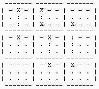

A WIN32 application to solve a 9x9 Sudoku puzzle. Not perfect, and NOT complete...
A little history. Up until circa 2012, my only involvement in Sudoku was to occasionally do the puzzle while sitting on the toilet ;=))
01/09/2012: So decide why not try to write an eduational type program in C/C++, to solve Sudoku step by step. This was before I had found lots of sites, or done any other reading on internet... I played with the code on and off for about 1.5 months, with the last then on 16/10/2012 with 1,011,516 Sudoku-48.zip
It is a windows app, and now it can solve a large number of puzzles. Of course by that I mean using ONLY the same logic used by humans... Yes, it can solve every puzzle by brute force trial and error, but that is NOT what it is all about...
So I started looking around for puzzles it can NOT solve, and then try to work out a strategy to get through it...
20150723: Then there was a 2/3 year delay before I decided to revive the project by adding a CMakeLists.txt, and a `build` folder to do the out-of-source build, and push it to a github repo.
If you have your build tools setup, then the simple build steps are :-
Of course, alteratively the cmake GUI can be used, and then the MSVC IDE can also be used to build the project.
The `examples` folder contains a considerable list of `sample` files which can be loaded. Or you can manually setup the puzzle from say a magazine and try to solve it... using the menu `->` Options `->` Solve!, or One Step, or simply selecting a square and entering a number manually...
Added a cmake option, -DBUILD_WIN32_EXE:BOOL=OFF to build it as a console app, Sudo-con, which when used will generate a console app which accepts an input file to auto-solve. This meant I could also have a unix port, until I decide on which GUI code to use to build the same GUI app there.
The main thing is have FUN!
Geoff.
20150723
|  |
Just a list of some sites... my all time favorite SudokuWiki.org, but there are MANY ...